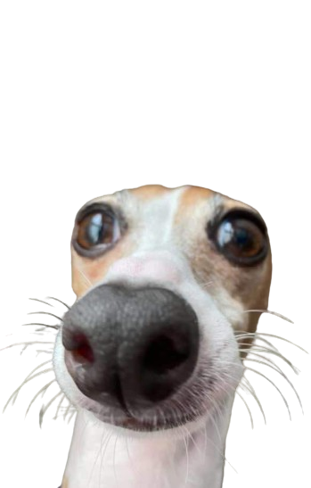

개발자
베이스
윈도우 버전과 로고의 변화를 정리한 사이트를 만들었습니다.
윈도우 로고가 시대마다 어떻게 달라졌는지 한눈에 볼 수 있게 모아봤어요
윈도우는 컴퓨터 화면에서 앱을 열고, 파일을 찾고, 여러 창을 오가게 해주는 운영체제입니다. 아래에는 주요 Windows 버전과 그 시기에 쓰인 로고를 순서대로 정리했습니다. 실제 로고 이미지는 Wikimedia Commons에서 가져왔습니다.
1985 → 지금
Windows(윈도우)는 마이크로소프트가 만든 컴퓨터 운영체제입니다. 운영체제는 컴퓨터를 켠 뒤 앱을 실행하고, 파일을 열고, 화면과 여러 장치를 사용할 수 있도록 기본 기능을 연결해 주는 프로그램입니다. 사용자가 마우스와 키보드로 명령을 내리면 윈도우가 그 내용을 컴퓨터에 전달하고, 앱이 쓸 수 있도록 작업 공간을 마련합니다.
윈도우에서는 바탕 화면에 바로 가기를 두고, 시작 메뉴에서 앱과 설정을 찾고, 파일 탐색기에서 문서나 사진을 정리할 수 있습니다. 여러 앱을 각각 창으로 열어 화면에 나란히 놓거나, 작업 표시줄을 이용해 열려 있는 창을 바꾸는 것도 가능합니다. 이런 화면 요소들이 서로 연결되어 있어서 글쓰기, 인터넷 검색, 영상 감상, 그림 작업, 게임처럼 여러 일을 한 컴퓨터에서 할 수 있습니다.
컴퓨터의 제조사와 부품 구성이 달라도 윈도우를 설치해 사용할 수 있다는 점은 윈도우의 중요한 특징입니다. 그래서 가격과 크기, 성능이 서로 다른 다양한 컴퓨터에서 같은 운영체제와 여러 앱을 사용할 수 있습니다. 프린터나 마우스 같은 주변 기기도 연결해 쓸 수 있고, 앱과 장치가 윈도우와 잘 맞도록 하는 드라이버와 업데이트도 제공됩니다. 다만 컴퓨터마다 화면과 성능이 다르고 설치된 앱도 다르기 때문에, 모든 기기에서 경험이 완전히 똑같지는 않습니다.
Windows는 한 번 만들어진 뒤 그대로 유지된 것이 아니라 새 버전이 나올 때마다 화면과 기능이 달라졌습니다. 시작 메뉴와 작업 표시줄의 모습, 창을 다루는 방법, 인터넷과 멀티미디어 기능, 보안과 설정 방식 등이 시대에 따라 바뀌었습니다. 로고도 이름 옆의 그림에서 색색의 깃발, 평평한 파란 창, 반듯한 네 칸 모양으로 변했습니다. 각 버전의 로고와 화면을 함께 보면 컴퓨터 사용 방식이 어떻게 변했는지 살펴볼 수 있습니다.
새 버전은 기능과 보안을 보완하지만, 메뉴 위치나 설정 방식이 바뀌면 이전 버전에 익숙한 사람에게는 낯설 수 있습니다. 업데이트가 오래 걸리거나, 원하는 설정을 찾기 어렵게 느껴지는 경우도 있습니다. 이런 장점과 불편한 점을 함께 살펴보면 운영체제가 단순히 바탕 화면의 그림만 뜻하는 것이 아니라, 컴퓨터를 사용하는 전체 경험에 영향을 준다는 점을 알 수 있습니다.

윈도우 버전과 로고의 변화를 정리한 사이트를 만들었습니다.